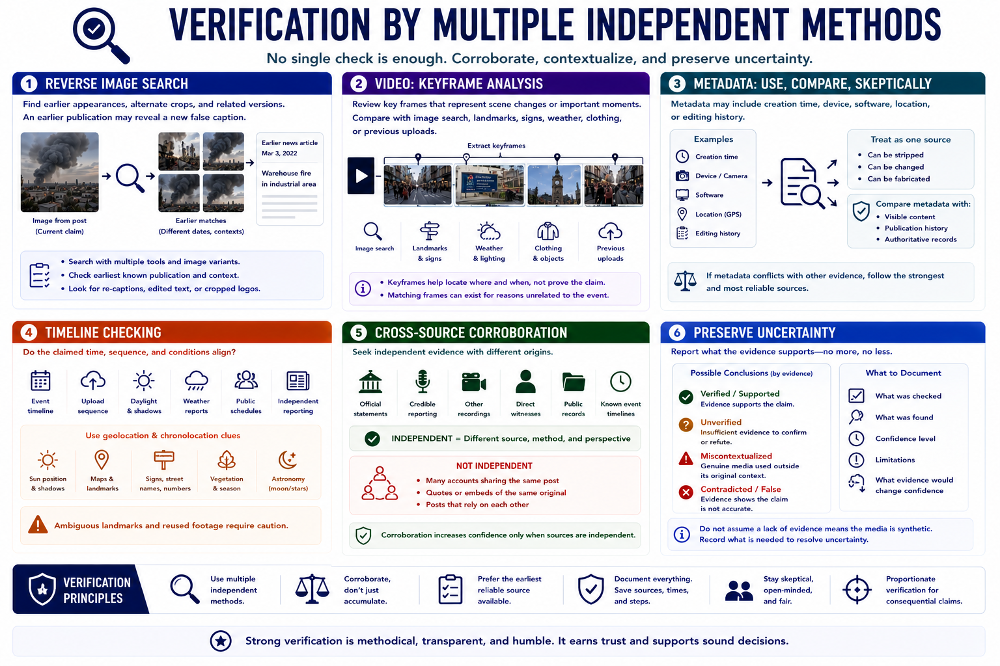

Verification Techniques
Connecting to LMS... Progress: in progress

Narration
Verification combines several independent methods. Reverse image search can locate earlier appearances, alternate crops, and related versions of an image. An earlier publication may reveal that genuine media has been assigned a new false caption.
For video, keyframe analysis reviews selected frames that represent scene changes or important moments. Keyframes can be compared with image-search results, landmarks, signs, weather, clothing, or previous uploads without assuming every matching frame proves the claim.
Metadata may include creation time, device, software, location, or editing history. It can be stripped, changed, or fabricated, so treat it as one source. Compare metadata with visible content, publication history, and authoritative records.
Timeline checking asks whether the claimed event, upload sequence, daylight, weather, public schedule, and independent reporting align. Geolocation and chronolocation clues can support place or time, but ambiguous landmarks and reused footage require caution.
Cross-source corroboration looks for independent evidence with different origins: official statements, credible reporting, other recordings, direct witnesses, public records, or known event timelines. Many accounts repeating one post are not independent confirmation.
Preserve uncertainty. If the evidence supports only that media is unverified or miscontextualized, report that conclusion. Do not convert an incomplete check into a claim that content is synthetic. Record what further evidence would materially change confidence.